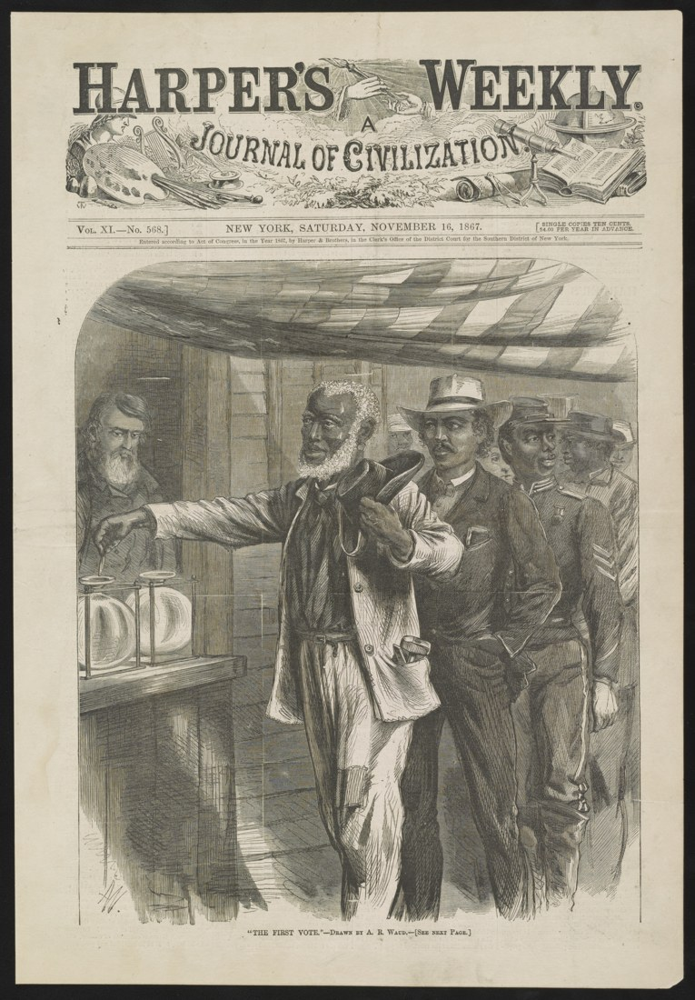

Directions: Read the full text, then answer the questions at the end.
In the spring of 1867, registration boards opened across the ten states the Reconstruction Acts had set aside, and men who had been property in law two years earlier walked to courthouses and schoolhouses to put their names on the rolls. Army officers supervised the registration, and by the fall some seven hundred thousand Black voters stood enrolled where none had voted before, alongside white voters registered under the same rules. In several states the new Black registrants outnumbered the white. The electorate that would write the reconstructed South's constitutions and staff its governments was built name by name, in lines that formed before dawn, by men who understood what a name on a roll could become.
Organization turned registration into power. From 1867 the Union League, a network of patriotic clubs carried South under the Loyal League name, spread through churches and schoolhouses, registering voters, teaching the workings of ballots and conventions, and binding new voters to the Republican Party. In the fall of 1867 the registered electorate chose delegates, and constitutional conventions met across the South into 1868. Black delegates sat in every one, and in South Carolina they held a majority of the seats. The constitutions the conventions wrote were the most democratic charters the South had known. They established the region's first public school systems, wrote civil rights into state law, made taxation fall more evenly on land and wealth, and opened office to men the old constitutions had excluded.

The governments elected under those constitutions rested on a coalition of three groups, and the coalition's enemies named two of them. Northern men who came South, as teachers, ministers, merchants, investors, Union veterans, and office seekers, were called carpetbaggers, pictured as adventurers carrying everything they owned in a carpetbag. White southerners who joined the Republican Party, upcountry Unionists, former Whigs, and poor farmers among them, were called scalawags, a name meant to mark them as traitors to their section. The third group needed no nickname. Black voters were the coalition's largest bloc in most states, and Black officeholders rose with the electorate that chose them, by the hundreds in the state legislatures, and as sheriffs, school superintendents, judges, and members of Congress.
At the top of the new order stood men whose presence in office stated the era's claim in a single fact. Hiram Rhodes Revels, a Mississippi minister freeborn in North Carolina, had recruited Black regiments and served as a Union army chaplain during the war. In 1870 the Mississippi legislature elected him to the United States Senate, the first Black member of Congress, and he took the seat Jefferson Davis had left when Mississippi seceded. In February 1871 Revels used that seat to argue on the Senate floor that the District of Columbia's public schools, which Congress governed directly, should place all children on an equality in the common schools, the speech this lesson's activity reads in his own words.
Louisiana carried the new order to the governor's chair. P. B. S. Pinchback, freeborn in Georgia and a Union officer in the war, rose through Louisiana's state senate to its presidency, became lieutenant governor when that office fell vacant, and in December 1872, with the governor suspended under impeachment, served as acting governor for five weeks, the first Black man to govern an American state. Mississippi closed the roster. Blanche K. Bruce, born enslaved in Virginia, rose through tax and education offices to election to the United States Senate in 1874, the second Black senator and the first to serve a full term, seated while the settlement that had elected him was already being dismantled.
Congress closed the amendment trilogy in February 1869, proposing the Fifteenth Amendment, and the states ratified it in February 1870. Its first section forbids the United States and the states to deny or abridge a citizen's right to vote on account of race, color, or previous condition of servitude, and its second section gives Congress power to enforce it by appropriate legislation. Read the wording with care. The amendment grants the vote to no one outright. It forbids one ground of denial and leaves other grounds standing, and within a generation southern states would use literacy tests and poll taxes, written without a racial word, to close the polls the amendment had opened. The amendment also split the old alliance of abolition and woman suffrage, whose leaders divided over an amendment that protected Black men's votes and said nothing of women's.
The new order's achievement and its weakness were the same fact seen from two sides. By 1870 the reconstructed South was running a democracy broader than the country had ever attempted, with Black men voting, holding office, writing constitutions, and sitting in the Senate of the United States. Every part of that order had been created by federal law, the registration the Reconstruction Acts ordered, the guarantees the amendments wrote, and the army's presence behind both, and every part depended on federal protection the new governments could not supply for themselves. The Fifteenth Amendment gave Congress power to enforce the vote. Whether Congress and the North would keep using that power was the question the next years would answer.
1. State how the new electorate was made in 1867, naming who supervised registration, the number of Black voters enrolled, and the organization that turned registration into political power and where it met.
2. State what the conventions of 1867 and 1868 wrote into the new constitutions, and state the three groups of the coalition that governed under them, with the hostile name given to each of the two groups the reading's opponents named.
3. State who Hiram Rhodes Revels was, naming his war service, the body that elected him in 1870, the seat he took, and the argument he carried to the Senate floor in February 1871.
4. State the Fifteenth Amendment's dates and its two sections, and state what its wording leaves open, naming the two devices later used to close the polls and the alliance the amendment split.
5. In a short paragraph, answer the lesson question from the reading. State who governed the reconstructed South, naming Pinchback's and Bruce's places in the roster, state what the Fifteenth Amendment settled and what it left open, and close by stating what the whole new order rested on.
1. State how the new electorate was made. Registration boards opened across the ten states set aside by the Reconstruction Acts in the spring of 1867, supervised by army officers, and by the fall some seven hundred thousand Black voters stood enrolled where none had voted before; in several states Black registrants outnumbered white. The Union League turned registration into power, spreading from 1867 under the Loyal League name through churches and schoolhouses, registering voters, teaching the workings of ballots and conventions, and binding new voters to the Republican Party.
2. State the constitutions and the coalition. The conventions of 1867 and 1868, with Black delegates in every one and a Black majority in South Carolina's, wrote the most democratic charters the South had known, establishing the region's first public school systems, writing civil rights into state law, making taxation fall more evenly on land and wealth, and opening office to men the old constitutions had excluded. The governing coalition joined northern newcomers, called carpetbaggers by their enemies and pictured as adventurers carrying all they owned in a carpetbag; white southern Republicans, called scalawags and marked as traitors to their section; and Black voters, the coalition's largest bloc in most states, who supplied officeholders by the hundreds in the state legislatures.
3. State who Revels was. Hiram Rhodes Revels was a Mississippi minister, freeborn in North Carolina, who had recruited Black regiments and served as a Union army chaplain. The Mississippi legislature elected him to the United States Senate in 1870, making him the first Black member of Congress, and he took the seat Jefferson Davis had left when Mississippi seceded. In February 1871 he argued on the Senate floor that the District of Columbia's public schools should place all children on an equality in the common schools.
4. State the amendment, its sections, and its silences. Congress proposed the Fifteenth Amendment in February 1869 and the states ratified it in February 1870. Section 1 forbids the United States and the states to deny or abridge a citizen's right to vote on account of race, color, or previous condition of servitude. Section 2 gives Congress power to enforce the article by appropriate legislation. The wording grants the vote to no one outright and forbids only one ground of denial, leaving other grounds standing; within a generation southern states used literacy tests and poll taxes, written without a racial word, to close the polls. The amendment also split the old alliance of abolition and woman suffrage.
5. Answer the lesson question from the reading. The reconstructed South was governed by a coalition of Black voters, northern newcomers its enemies called carpetbaggers, and white southern Republicans its enemies called scalawags, under constitutions that founded public schools and wrote civil rights into state law. Its roster reached the top of American government: Pinchback served as acting governor of Louisiana for five weeks in the winter of 1872 and 1873, the first Black man to govern a state, and Bruce, elected to the Senate in 1874, served the first full term by a Black senator. The Fifteenth Amendment settled that race, color, and previous servitude could no longer be stated as grounds for denying the vote, and gave Congress enforcement power. It left open every other ground of denial, the ground on which literacy tests and poll taxes would later be built. The whole order rested on federal protection the new governments could not supply themselves.